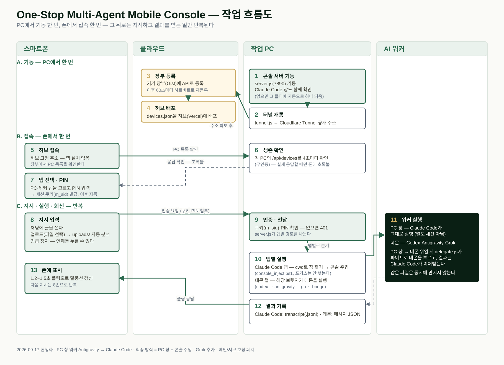
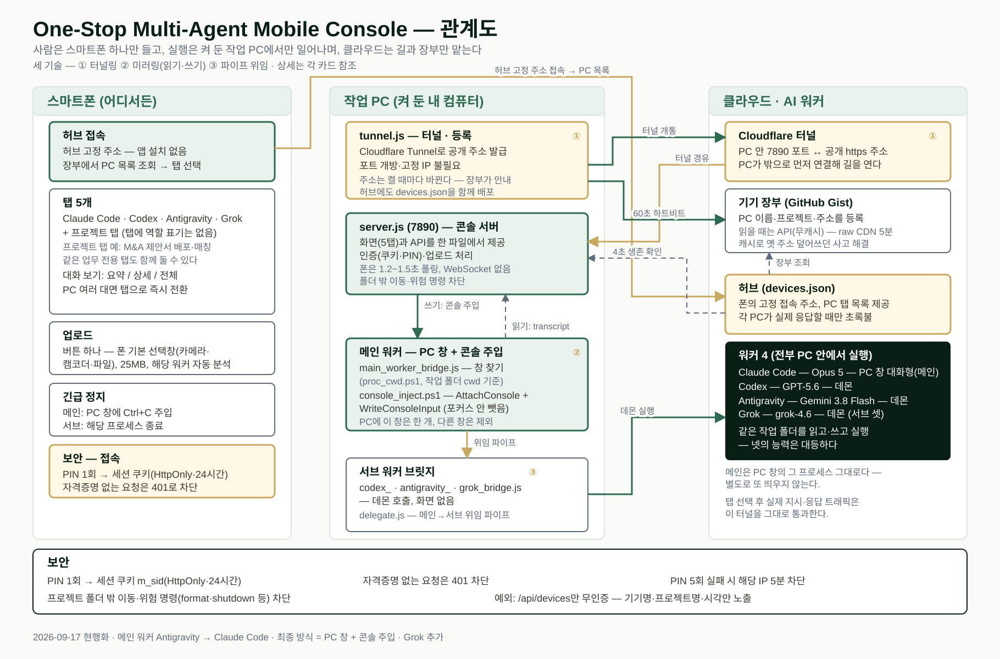

어떤 PC에서든 더블 클릭 한 번으로 스마트폰과 AI 워커 4종을 연결하는 스타터 킷. 폰은 북마크 하나, PC는 켜 두기만. PC가 여러 대면 폰 화면 상단 탭으로 번갈아 지휘한다. 지시는 폰에서, 실행과 파일은 전부 PC 안에서.
필요한 것 — Node.js가 깔린 Windows PC 1대, 스마트폰 브라우저. 포트 개방·공유기 설정·앱 설치 전부 없음.
Problem
Claude Code, Codex, Antigravity, Grok — 넷 다 PC에서 돕니다. 자리를 뜨는 순간 지시도, 확인도 끊깁니다. 원격 데스크톱은 무겁고, 터미널 공유는 폰에서 쓸 물건이 아닙니다.
외출·이동·회의 중에는 돌아가는 작업을 볼 수도, 다음 지시를 줄 수도 없다.
IDE 대화창, 터미널 두 개. 폰에서 셋을 한 화면에 모을 방법이 없었다.
포트 포워딩, 고정 IP, VPN, 앱 설치. PC를 바꾸면 처음부터 다시.
How it works
스타터 킷 폴더를 더블 클릭하면 PC가 스스로 길을 열고 이름표를 붙입니다. 폰은 늘 같은 주소를 열기만 하면 됩니다.
프로젝트 폴더에서 Claude Code 창 하나를 띄웁니다(없으면 서버가 자동으로 띄움). 실행기를 더블 클릭하면 콘솔 서버가 뜨고, 내장 cloudflared로 공개 https 주소를 받아 기기 장부에 등록합니다.
통합 허브가 켜진 PC마다 탭을 띄웁니다. 허브는 각 PC의 상태를 4초마다 직접 확인해, 실제로 응답할 때만 탭에 초록불을 켭니다. PC별 전용 주소도 있습니다.
탭을 고르고 지시. 메인(Claude Code)은 PC 창이 그대로 비치고 폰 지시가 그 창 콘솔에 그대로 타이핑됩니다. 서브(Codex·Antigravity·Grok)는 그때 데몬이 일어나 실행합니다. 긴급 정지는 언제나.

Architecture
허브와 장부가 아는 것은 "어느 PC가 켜져 있고 주소가 무엇인가"뿐입니다. 대화도, 업로드한 파일도, 워커가 만든 결과물도 클라우드에는 남지 않습니다.

| 구성 요소 | 역할 | 어디서 |
|---|---|---|
실행기 .bat | 더블 클릭 한 번으로 콘솔 서버와 터널을 기동. Node.js만 있으면 어느 PC든. 메인 워커 창 단독 실행기, 서브2 단독 실행기도 별도로 있다. | 작업 PC |
server.js (7890) | 모바일 콘솔 화면(5탭)과 API를 한 파일로. PIN·인증 검사, 업로드 처리. 폰은 1.2~1.5초 폴링, WebSocket 없음. | 작업 PC |
tunnel.js | 내장 cloudflared로 공개 https 주소 발급, 기기 장부 API에 등록, 60초 하트비트, 허브에 devices.json 배포. | 작업 PC |
| 메인 워커 브릿지 | main_worker_bridge가 작업 폴더 기준으로 PC 창을 찾아 대화(transcript)를 읽고 지시를 주입(console_inject). proc_cwd가 창별 작업 폴더를 판별. | 작업 PC |
| 서브 워커 브릿지 | codex_bridge·antigravity_bridge·grok_bridge가 데몬을 실행해 결과를 저장하고, delegate가 메인 → 서브 위임을 중개. | 작업 PC |
| Cloudflare 터널 | PC 안 7890 포트 ↔ 공개 https. 포트 개방·공유기 설정 없음, SSL 자동. | 클라우드 |
| 통합 허브 | 정적 페이지 1장. 장부를 읽어 켜진 PC마다 탭을 띄우고, 각 PC를 4초마다 직접 확인해 실제 응답할 때만 초록불. PC별 전용 주소도 발급. | 클라우드 |
| 기기 장부 (Gist) | 어느 PC가 켜져 있고 주소가 무엇인지. 읽을 때는 API(무캐시) — raw CDN 캐시로 옛 주소를 덮어쓰던 사고를 막았다. | 클라우드 |
Cloudflare Tunnel. 포트 개방·고정 IP·공유기 설정 전부 불필요 — PC가 밖으로 먼저 연결을 걸어 길을 연다.
읽기는 세션 transcript(.jsonl)를 읽어 말풍선으로, 쓰기는 콘솔 주입으로 PC 창에 그대로 타이핑. 이 둘이 PC 창과 폰을 잇는다.
delegate.js가 자식 프로세스를 띄워 stdin/stdout으로 서브 워커를 부린다.
①②가 겹쳐야 밖에서 PC 창을 그대로 쓸 수 있고, 여기에 ③이 더해져야 서브 워커 3종을 한 작업장에서 동시에 쓴다.
Workers
넷 다 PC 안에서 실행됩니다. 폰은 지시와 확인만 합니다.
PC 터미널 창에서 대화형으로 돈다. 폰은 그 창의 대화를 그대로 미러링해 보고, 폰 지시는 콘솔 입력으로 그 창에 그대로 타이핑된다. 긴급 정지는 그 창에 Ctrl+C 주입.
데몬으로 돈다. 시킬 때 codex exec가 일어나 실행하고 끝나면 종료. 화면 없이 결과만 남는다.
데몬으로 돈다. agy -p + --conversation으로 맥락을 유지하며, 시킬 때만 일어난다.
데몬으로 돈다. CLI 로그인 세션을 쓰며 API 키는 쓰지 않는다. 최초 --session-id, 이후 --resume으로 맥락을 유지한다.
메인/서브는 계급이 아니라 '앉은 자리'다. 네 워커 모두 같은 작업 폴더에서 읽고·쓰고·실행한다 — 능력은 대등하다. 독립 실행(폰 탭에서 직접 지시, 메인은 모름)일 때는 독립 작업자이고, 위임 수행(메인이 호출)일 때만 보조 성격을 띤다.
메인을 거치지 않음 · 가장 빠름
codex exec · agy -p · grok -p
node delegate.js grok "지시"
같은 파일을 두 워커가 동시에 만지지 않는다. 서브 워커도 파일을 쓴다 — 동시에 고치면 나중에 저장한 쪽이 이기고 되돌릴 수단이 없다.
Console
메인. PC 창 대화 미러 + 지시 입력. 폰 지시가 그 창 콘솔에 그대로 타이핑된다.
서브1. 지시 → 데몬 실행 → 결과. 상태 라벨(작업 중/대기)과 전체 히스토리.
서브2. Codex와 같은 데몬 방식. 사진·파일 업로드 후 분석 지시.
서브3. CLI 로그인 세션으로 실행하며, grok_bridge가 상태 확인과 지시 전송을 맡는다.
프로젝트 전용 화면(예: M&A 제안서 배포·매칭). 파일 API는 작업 폴더 밖을 차단.
공통 — 📎 업로드 하나(폰 기본 선택창, 중간 팝업 없음), 대화 보기 요약/상세/전체, 긴급 정지(메인은 Ctrl+C 주입, 서브는 프로세스 종료), 허브 상단 PC 탭으로 다른 컴퓨터로 즉시 이동.
Design principles
첫 접속에 PIN을 넣으면 세션 쿠키(HttpOnly·24시간)가 발급되고 모든 API 호출에 자동으로 붙는다. 자격증명 없는 요청은 401, PIN 5회 실패 시 해당 IP는 5분간 차단된다. 기기 생존 확인용 API 1개만 무인증.
허브와 장부는 "어느 PC가 켜져 있고 주소가 무엇인가"만 안다. 대화·파일·결과물은 PC 밖으로 나가지 않는다.
1.2~1.5초 폴링. 부품이 적어 끊겨도 스스로 돌아온다.
cloudflared 실행 파일 내장. 폴더를 복사해 어느 PC에 붙여도 그대로 동작하고, 켜진 PC마다 허브에 탭이 하나씩 생긴다.
Starter kit
실행기·서버·브릿지·터널 엔진과 내장 실행 파일 cloudflared 1개가 한 폴더에 들어 있습니다. 소스와 사용법은 GitHub에서.